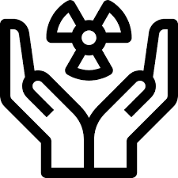

A humanidade consome diariamente milhoes de kilowatts/hora, que são produzidos por diferentes meios. Com aumento da população, e a diminuição de recursos naturais, como será no futuro a produção de energia?
Energia é a capacidade de algo de realizar trabalho, ou seja, gerar força num determinado corpo, substância ou sistema físico. Etimologicamente, este termo deriva do grego "ergos", cujo significado original é literalmente “trabalho”.
Mas deixando de lado a parte teoria e o conceito sobre o que é energia, a energia pode ser denominada como o fluxo de eletrons em um determinado sistema.
Hoje em dia a maior parte da matriz energetica mundial é composta de fontes não renovaveis utilizando petróleo, gás ou carvão.
Porem temos meios sustentaveis de produção energetica como usinas hidroeletricas, placas solares e campos eolicos
Carvão
O carvão mineral é a segunda fonte de energia mais utilizada do mundo, e passou e ter grande importancia para a economia a partir da Primeira Revolução Industrial. Produzindo atualmente 29% da matriz energética mundial
Hidroelétrica
A energia hidrelétrica é aquela obtida pela força das águas. Essa energia é produzida pelo aproveitamento do potencial hidráulico, ou seja, da força das águas dos rios. Produzindo atualmente 2% de toda a Matriz Energética Mundial
Petróleo
O petróleo é um combustivel fóssil extraido do subterraneo é considerado um dos principais recursos naturais utilizados para produção energetica, produzindo atualmente 31% da Matriz Energética Mundial
Solar
Energia solar corresponde à energia proveniente da luz e do calor emitidos pelo Sol. Essa fonte de energia pode ser aproveitada de forma fotovoltaica ou térmica, gerando energia elétrica e térmica, respectivamente. Produzindo atualmente 1% de toda a Matriz Energética Mundial

Nuclear
Energia nuclear ou atômica é a energia produzida nas usinas termonucleares, que utilizam o urânio e outros elementos, como combustível. Atualmente 5% da Matriz Energética Mundial provem da energia nuclear
Eólica
A Energia eólica é o processo pelo qual o vento é transformado em energia cinética e a partir dela em eletricidade com o uso de equipamentos específicos. Atualmente 2% da Matriz Energética Mundial provem da energia nuclear
Os recursos energéticos são o foco dos interesses estatais, gerando disputas geopolíticas desde a primeira Revolução Industrial.
Na segunda metade do século XX, com a expansão do meio urbano-industrial, principalmente, na América Latina e Sudeste Asiático e, consequentemente, o crescimento populacional, houve o aumento exponencial da demanda energética.
Nos últimos anos, a questão energética traz novas discussões: agências internacionais, estados e a sociedade, geram debate sobre consumo, recursos naturais, mudanças climáticas e, principalmente, a segurança energética dos países mais ricos. Porem isto levanta uma questão, como será a energia do futuro?
Vamos falar sobre o Tokamak
O tokamak é um dispositivo experimental projetado para confinar plasmas em alta temperatura numa região com a forma de um toróide,
usando para isso campos magnéticos intensos. Dessa forma, é possível o estudo de plasmas em condições de temperaturas e densidades que possam levar à fusão nuclear controlada de núcleos
leves como o deutério e trítio. Um dos objetivos da pesquisa nesta área é viabilizar a construção de reatores nucleares de fusão.
O reator de fusão nuclear mais conhecido é o Tokamak, de Princeton, Estados Unidos, que funciona com uma temperatura de 100 milhões de graus Celsius. Esse tipo de reator consegue suportar temperaturas altas, mantendo um plasma longe das paredes, durante pouco tempo, e usando técnicas de confinamento magnético.
No entanto, até o momento ainda não foi descoberto um meio de obtenção de energia útil de um reator desse tipo, pois a energia gasta para ativar o campo magnético onde o plasma fica confinado ainda é maior que a energia obtida na fusão dentro do reator.
ONU, Energia onde tudo isso se encaixa?
Os 17 Objetivos de Desenvolvimento Sustentável (ODS) foram estabelecidos pela Organização das Nações Unidas (ONU) em 2015 e compõem uma agenda mundial para a construção e implementação de políticas públicas que visam guiar a humanidade até 2030.
Conheça sobre a sétima ODS que é composta em 5 tópicos
-Até 2030, assegurar o acesso universal, confiável, moderno e a preços acessíveis a serviços de energia
-Até 2030, aumentar substancialmente a participação de energias renováveis na matriz energética global
-Até 2030, dobrar a taxa global de melhoria da eficiência energética
-Até 2030, reforçar a cooperação internacional para facilitar o acesso a pesquisa e tecnologias de energia limpa, incluindo energias renováveis, eficiência energética e tecnologias de combustíveis fósseis avançadas e mais limpas, e promover o investimento em infraestrutura de energia e em tecnologias de energia limpa
-Até 2030, expandir a infraestrutura e modernizar a tecnologia para o fornecimento de serviços de energia modernos e sustentáveis para todos nos países em desenvolvimento, particularmente nos países menos desenvolvidos, nos pequenos Estados insulares em desenvolvimento e nos países em desenvolvimento sem litoral, de acordo com seus respectivos programas de apoio